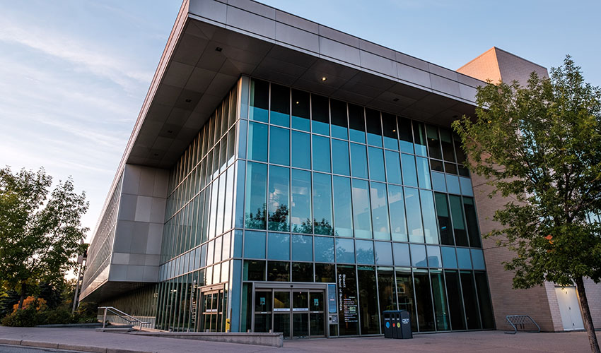

Who Are We?
The Bissett Consulting Organization is a student-run club under SAMRU, founded in September 2025 to introduce students to the world of consulting and strategy. We give students real exposure through case competitions, networking events, and hands-on workshops.